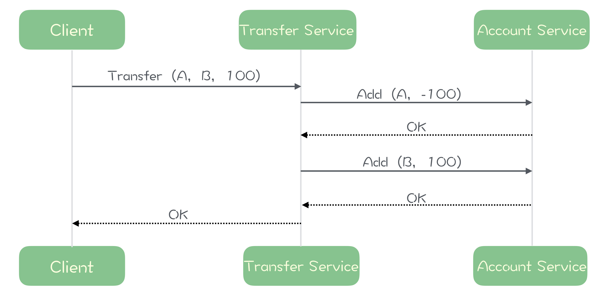
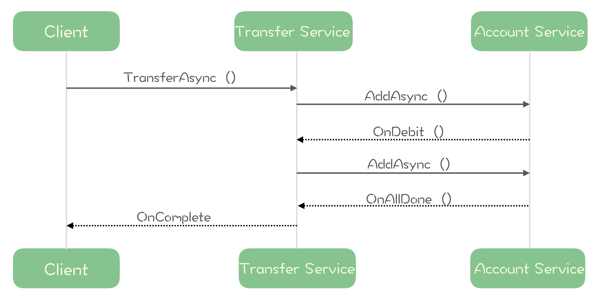

- 00 开篇词 优秀的程序员，你的技术栈中不能只有“增删改查”.md.html
- 00 预习 怎样更好地学习这门课？.md.html
- 01 为什么需要消息队列？.md.html
- 02 该如何选择消息队列？.md.html
- 03 消息模型：主题和队列有什么区别？.md.html
- 04 如何利用事务消息实现分布式事务？.md.html
- 05 如何确保消息不会丢失.md.html
- 06 如何处理消费过程中的重复消息？.md.html
- 07 消息积压了该如何处理？.md.html
- 08 答疑解惑（一） 网关如何接收服务端的秒杀结果？.md.html
- 09 学习开源代码该如何入手？.md.html
- 10 如何使用异步设计提升系统性能？.md.html
- 11 如何实现高性能的异步网络传输？.md.html
- 12 序列化与反序列化：如何通过网络传输结构化的数据？.md.html
- 13 传输协议：应用程序之间对话的语言.md.html
- 14 内存管理：如何避免内存溢出和频繁的垃圾回收？.md.html
- 15 Kafka如何实现高性能IO？.md.html
- 16 缓存策略：如何使用缓存来减少磁盘IO？.md.html
- 17 如何正确使用锁保护共享数据，协调异步线程？.md.html
- 18 如何用硬件同步原语（CAS）替代锁？.md.html
- 19 数据压缩：时间换空间的游戏.md.html
- 20 RocketMQ Producer源码分析：消息生产的实现过程.md.html
- 21 Kafka Consumer源码分析：消息消费的实现过程.md.html
- 22 Kafka和RocketMQ的消息复制实现的差异点在哪？.md.html
- 23 RocketMQ客户端如何在集群中找到正确的节点？.md.html
- 24 Kafka的协调服务ZooKeeper：实现分布式系统的“瑞士军刀”.md.html
- 25 RocketMQ与Kafka中如何实现事务？.md.html
- 26 MQTT协议：如何支持海量的在线IoT设备.md.html
- 27 Pulsar的存储计算分离设计：全新的消息队列设计思路.md.html
- 28 答疑解惑（二）：我的100元哪儿去了？.md.html
- 29 流计算与消息（一）：通过Flink理解流计算的原理.md.html
- 30 流计算与消息（二）：在流计算中使用Kafka链接计算任务.md.html
- 31 动手实现一个简单的RPC框架（一）：原理和程序的结构.md.html
- 32 动手实现一个简单的RPC框架（二）：通信与序列化.md.html
- 33 动手实现一个简单的RPC框架（三）：客户端.md.html
- 34 动手实现一个简单的RPC框架（四）：服务端.md.html
- 35 答疑解惑（三）：主流消息队列都是如何存储消息的？.md.html
- 加餐 JMQ的Broker是如何异步处理消息的？.md.html
- 结束语 程序员如何构建知识体系？.md.html
- 捐赠
10 如何使用异步设计提升系统性能？
你好，我是李玥，这一讲我们来聊一聊异步。
对于开发者来说，异步是一种程序设计的思想，使用异步模式设计的程序可以显著减少线程等待，从而在高吞吐量的场景中，极大提升系统的整体性能，显著降低时延。
因此，像消息队列这种需要超高吞吐量和超低时延的中间件系统，在其核心流程中，一定会大量采用异步的设计思想。
接下来，我们一起来通过一个非常简单的例子学习一下，使用异步设计是如何提升系统性能的。
异步设计如何提升系统性能？
假设我们要实现一个转账的微服务 Transfer( accountFrom, accountTo, amount)，这个服务有三个参数：分别是转出账户、转入账户和转账金额。
实现过程也比较简单，我们要从账户 A 中转账 100 元到账户 B 中：
- 先从 A 的账户中减去 100 元；
- 再给 B 的账户加上 100 元，转账完成。
对应的时序图是这样的：

在这个例子的实现过程中，我们调用了另外一个微服务 Add(account, amount)，它的功能是给账户 account 增加金额 amount，当 amount 为负值的时候，就是扣减响应的金额。
需要特别说明的是，在这段代码中，我为了使问题简化以便我们能专注于异步和性能优化，省略了错误处理和事务相关的代码，你在实际的开发中不要这样做。
1. 同步实现的性能瓶颈
首先我们来看一下同步实现，对应的伪代码如下：
Transfer(accountFrom, accountTo, amount) {
// 先从 accountFrom 的账户中减去相应的钱数
Add(accountFrom, -1 * amount)
// 再把减去的钱数加到 accountTo 的账户中
Add(accountTo, amount)
return OK
}
上面的伪代码首先从 accountFrom 的账户中减去相应的钱数，再把减去的钱数加到 accountTo 的账户中，这种同步实现是一种很自然方式，简单直接。那么性能表现如何呢？接下来我们就来一起分析一下性能。
假设微服务 Add 的平均响应时延是 50ms，那么很容易计算出我们实现的微服务 Transfer 的平均响应时延大约等于执行 2 次 Add 的时延，也就是 100ms。那随着调用 Transfer 服务的请求越来越多，会出现什么情况呢？
在这种实现中，每处理一个请求需要耗时 100ms，并在这 100ms 过程中是需要独占一个线程的，那么可以得出这样一个结论：每个线程每秒钟最多可以处理 10 个请求。我们知道，每台计算机上的线程资源并不是无限的，假设我们使用的服务器同时打开的线程数量上限是 10,000，可以计算出这台服务器每秒钟可以处理的请求上限是： 10,000 （个线程）* 10（次请求每秒） = 100,000 次每秒。
如果请求速度超过这个值，那么请求就不能被马上处理，只能阻塞或者排队，这时候 Transfer 服务的响应时延由 100ms 延长到了：排队的等待时延 + 处理时延 (100ms)。也就是说，在大量请求的情况下，我们的微服务的平均响应时延变长了。
这是不是已经到了这台服务器所能承受的极限了呢？其实远远没有，如果我们监测一下服务器的各项指标，会发现无论是 CPU、内存，还是网卡流量或者是磁盘的 IO 都空闲的很，那我们 Transfer 服务中的那 10,000 个线程在干什么呢？对，绝大部分线程都在等待 Add 服务返回结果。
也就是说，采用同步实现的方式，整个服务器的所有线程大部分时间都没有在工作，而是都在等待。
如果我们能减少或者避免这种无意义的等待，就可以大幅提升服务的吞吐能力，从而提升服务的总体性能。
2. 采用异步实现解决等待问题
接下来我们看一下，如何用异步的思想来解决这个问题，实现同样的业务逻辑。
TransferAsync(accountFrom, accountTo, amount, OnComplete()) {
// 异步从 accountFrom 的账户中减去相应的钱数，然后调用 OnDebit 方法。
AddAsync(accountFrom, -1 * amount, OnDebit(accountTo, amount, OnAllDone(OnComplete())))
}
// 扣减账户 accountFrom 完成后调用
OnDebit(accountTo, amount, OnAllDone(OnComplete())) {
// 再异步把减去的钱数加到 accountTo 的账户中，然后执行 OnAllDone 方法
AddAsync(accountTo, amount, OnAllDone(OnComplete()))
}
// 转入账户 accountTo 完成后调用
OnAllDone(OnComplete()) {
OnComplete()
}
细心的你可能已经注意到了，TransferAsync 服务比 Transfer 多了一个参数，并且这个参数传入的是一个回调方法 OnComplete()（虽然 Java 语言并不支持将方法作为方法参数传递，但像 JavaScript 等很多语言都具有这样的特性，在 Java 语言中，也可以通过传入一个回调类的实例来变相实现类似的功能）。
这个 TransferAsync() 方法的语义是：请帮我执行转账操作，当转账完成后，请调用 OnComplete() 方法。调用 TransferAsync 的线程不必等待转账完成就可以立即返回了，待转账结束后，TransferService 自然会调用 OnComplete() 方法来执行转账后续的工作。
异步的实现过程相对于同步来说，稍微有些复杂。我们先定义 2 个回调方法：
- OnDebit()：扣减账户 accountFrom 完成后调用的回调方法；
- OnAllDone()：转入账户 accountTo 完成后调用的回调方法。
整个异步实现的语义相当于：
- 异步从 accountFrom 的账户中减去相应的钱数，然后调用 OnDebit 方法；
- 在 OnDebit 方法中，异步把减去的钱数加到 accountTo 的账户中，然后执行 OnAllDone 方法；
- 在 OnAllDone 方法中，调用 OnComplete 方法。
绘制成时序图是这样的：

你会发现，异步化实现后，整个流程的时序和同步实现是完全一样的，区别只是在线程模型上由同步顺序调用改为了异步调用和回调的机制。
接下来我们分析一下异步实现的性能，由于流程的时序和同步实现是一样，在低请求数量的场景下，平均响应时延一样是 100ms。在超高请求数量场景下，异步的实现不再需要线程等待执行结果，只需要个位数量的线程，即可实现同步场景大量线程一样的吞吐量。
由于没有了线程的数量的限制，总体吞吐量上限会大大超过同步实现，并且在服务器 CPU、网络带宽资源达到极限之前，响应时延不会随着请求数量增加而显著升高，几乎可以一直保持约 100ms 的平均响应时延。
看，这就是异步的魔力。
简单实用的异步框架: CompletableFuture
在实际开发时，我们可以使用异步框架和响应式框架，来解决一些通用的异步编程问题，简化开发。Java 中比较常用的异步框架有 Java8 内置的CompletableFuture和 ReactiveX 的RxJava，我个人比较喜欢简单实用易于理解的 CompletableFuture，但是 RxJava 的功能更加强大。有兴趣的同学可以深入了解一下。
Java 8 中新增了一个非常强大的用于异步编程的类：CompletableFuture，几乎囊获了我们在开发异步程序的大部分功能，使用 CompletableFuture 很容易编写出优雅且易于维护的异步代码。
接下来，我们来看下，如何用 CompletableFuture 实现的转账服务。
首先，我们用 CompletableFuture 定义 2 个微服务的接口：
/**
* 账户服务
*/
public interface AccountService {
/**
* 变更账户金额
* @param account 账户 ID
* @param amount 增加的金额，负值为减少
*/
CompletableFuture<Void> add(int account, int amount);
}
/**
* 转账服务
*/
public interface TransferService {
/**
* 异步转账服务
* @param fromAccount 转出账户
* @param toAccount 转入账户
* @param amount 转账金额，单位分
*/
CompletableFuture<Void> transfer(int fromAccount, int toAccount, int amount);
}
可以看到这两个接口中定义的方法的返回类型都是一个带泛型的 CompletableFeture，尖括号中的泛型类型就是真正方法需要返回数据的类型，我们这两个服务不需要返回数据，所以直接用 Void 类型就可以。
然后我们来实现转账服务：
/**
* 转账服务的实现
*/
public class TransferServiceImpl implements TransferService {
@Inject
private AccountService accountService; // 使用依赖注入获取账户服务的实例
@Override
public CompletableFuture<Void> transfer(int fromAccount, int toAccount, int amount) {
// 异步调用 add 方法从 fromAccount 扣减相应金额
return accountService.add(fromAccount, -1 * amount)
// 然后调用 add 方法给 toAccount 增加相应金额
.thenCompose(v -> accountService.add(toAccount, amount));
}
}
在转账服务的实现类 TransferServiceImpl 里面，先定义一个 AccountService 实例，这个实例从外部注入进来，至于怎么注入不是我们关心的问题，就假设这个实例是可用的就好了。
然后我们看实现 transfer() 方法的实现，我们先调用一次账户服务 accountService.add() 方法从 fromAccount 扣减响应的金额，因为 add() 方法返回的就是一个 CompletableFeture 对象，可以用 CompletableFeture 的 thenCompose() 方法将下一次调用 accountService.add() 串联起来，实现异步依次调用两次账户服务完整转账。
客户端使用 CompletableFuture 也非常灵活，既可以同步调用，也可以异步调用。
public class Client {
@Inject
private TransferService transferService; // 使用依赖注入获取转账服务的实例
private final static int A = 1000;
private final static int B = 1001;
public void syncInvoke() throws ExecutionException, InterruptedException {
// 同步调用
transferService.transfer(A, B, 100).get();
System.out.println(" 转账完成！");
}
public void asyncInvoke() {
// 异步调用
transferService.transfer(A, B, 100)
.thenRun(() -> System.out.println(" 转账完成！"));
}
}
在调用异步方法获得返回值 CompletableFuture 对象后，既可以调用 CompletableFuture 的 get 方法，像调用同步方法那样等待调用的方法执行结束并获得返回值，也可以像异步回调的方式一样，调用 CompletableFuture 那些以 then 开头的一系列方法，为 CompletableFuture 定义异步方法结束之后的后续操作。比如像上面这个例子中，我们调用 thenRun() 方法，参数就是将转账完成打印在控台上这个操作，这样就可以实现在转账完成后，在控制台打印“转账完成！”了。
小结
简单的说，异步思想就是，当我们要执行一项比较耗时的操作时，不去等待操作结束，而是给这个操作一个命令：“当操作完成后，接下来去执行什么。”
使用异步编程模型，虽然并不能加快程序本身的速度，但可以减少或者避免线程等待，只用很少的线程就可以达到超高的吞吐能力。
同时我们也需要注意到异步模型的问题：相比于同步实现，异步实现的复杂度要大很多，代码的可读性和可维护性都会显著的下降。虽然使用一些异步编程框架会在一定程度上简化异步开发，但是并不能解决异步模型高复杂度的问题。
异步性能虽好，但一定不要滥用，只有类似在像消息队列这种业务逻辑简单并且需要超高吞吐量的场景下，或者必须长时间等待资源的地方，才考虑使用异步模型。如果系统的业务逻辑比较复杂，在性能足够满足业务需求的情况下，采用符合人类自然的思路且易于开发和维护的同步模型是更加明智的选择。
© 2019 - 2023 Liangliang Lee. Powered by gin and hexo-theme-book.